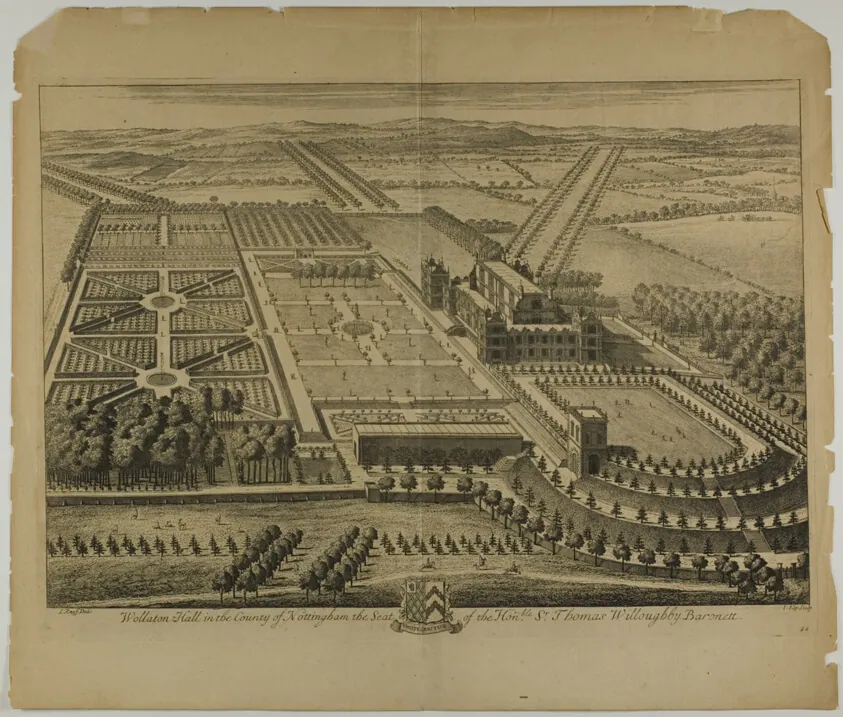

1/10 · Exterior · A view of Wollaton Hall west front from the south-west, Nottingham, EnglandPhoto: Acabashi · CC BY-SA 4.0 · source2/10 · Exterior · A view of Wollaton Hall west front, Nottingham, EnglandPhoto: Acabashi · CC BY-SA 4.0 · source3/10 · ExteriorPhoto: Photograph by Mike Peel ( www.mikepeel.net ) · CC BY-SA 4.0 · source4/10 · ExteriorPhoto: It's No Game · CC BY 2.0 · source5/10 · Interior · Used for 'Wayne Manor' in 'The Dark Knight Rises'Photo: arrannffc from Nottingham, UK · CC BY 2.0 · source6/10 · InteriorPhoto: Photograph by Mike Peel ( www.mikepeel.net ) · CC BY-SA 4.0 · source7/10 · Plan · Wollaton Hall - planPhoto: No credit for plan; architect was John Thorpe · Public domain · source8/10 · Plan · Wollation Hall, ground plan, 1901, Nottingham, EnglandPhoto: Unknown author · Public domain · source9/10 · Plan · Wollaton Hall, plan by Smithson, Nottingham, EnglandPhoto: Smithson · Public domain · source

Photos unavailable10/10Johannes Kip, Art Institute of Chicago · CC0 · source
Wollaton Hall is an Elizabethan country house of the 1580s standing on a small but prominent hill in Wollaton Park, Nottingham, England. The house is now Nottingham Natural History Museum, with Nottingham Industrial Museum in the outbuildings. The surrounding parkland has a herd of deer, and is regularly used for large-scale outdoor events such as rock concerts, sporting events and festivals.
The building consists of a central block dominated by a hall three storeys high, with a stone screen at one end and galleries at either end, with the "Prospect Room" above that. From this there are extensive views of the park and surrounding country. There are towers at each corner, projecting out from this top floor. At each corner of the house is a square pavilion of three storeys, with decorative features rising above the roof line. Much of the basement storey is cut from the rock the house sits on.